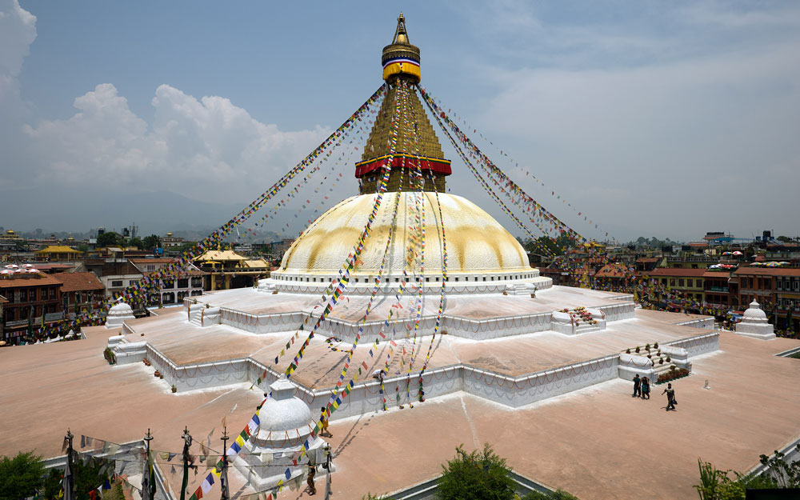
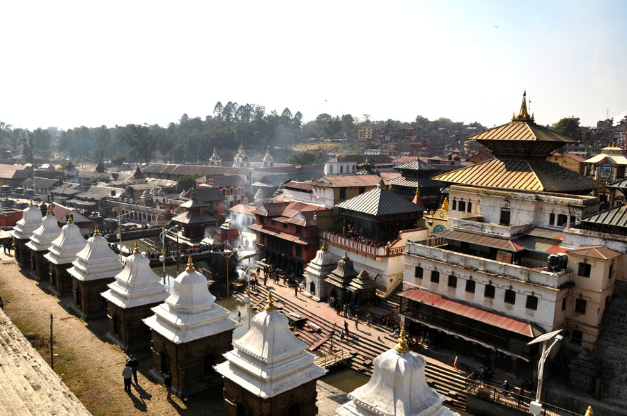
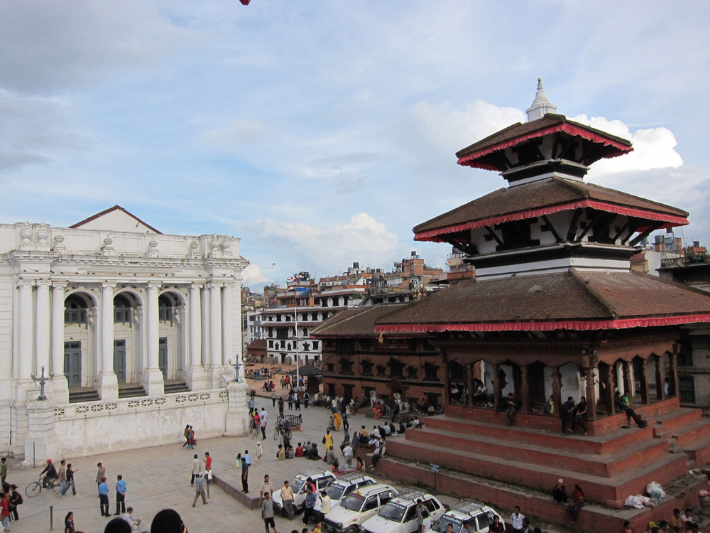
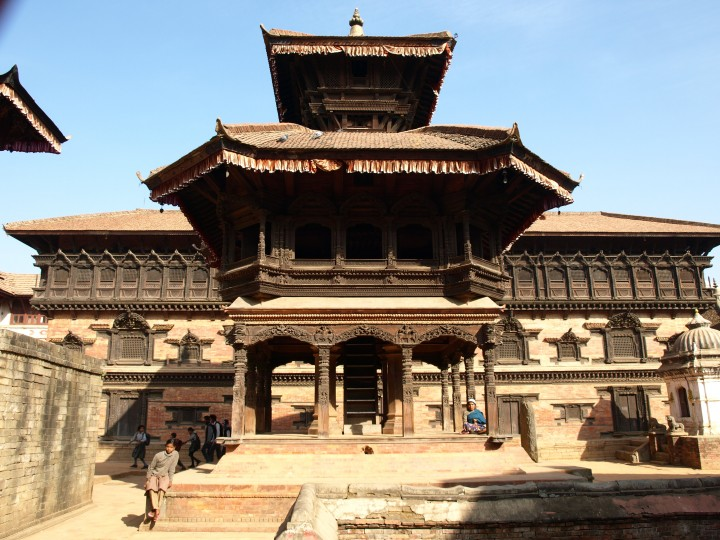
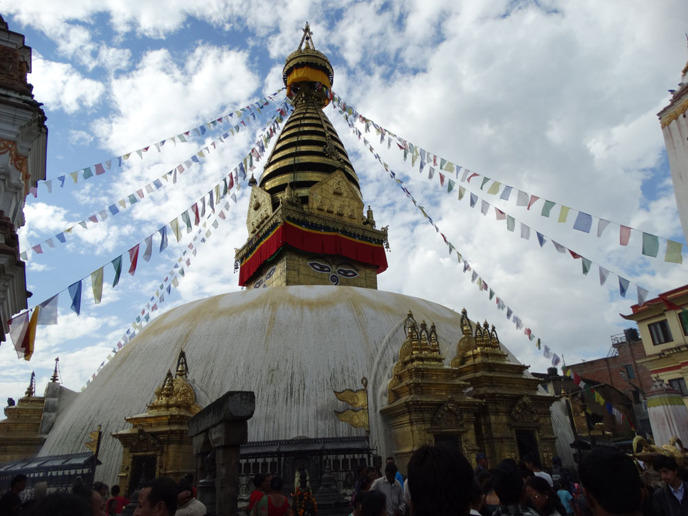
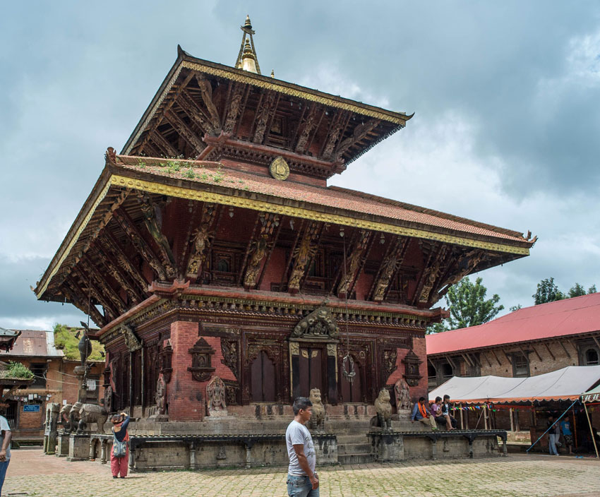
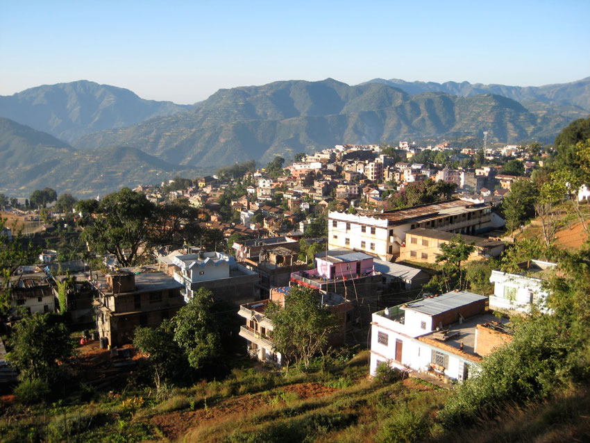

Cultual Heritage of Nepal
Nepal is blessed with such astonishing and unique sites that within the area of 140,800 sq km, Nepal has one of the highest concentration of the sites recognized by UNESCO as World Heritage Sites. Nepal has its own rich and unique culture which has evolved over the centuries. The geographical and ethnic diversity of the country has widely resulted in the rich diverse culture of the country. As the country was never colonized by any superpowers of the world, Nepal’s cultural uniqueness has been intact. Nepal has diverse ethnic, tribal and social groups manifesting their own unique music, dance, art, craft, folktales, festivals, languages and literature. The country holds its own unique history with its own exclusive art and architectures. Nepal has various sites to satisfy the desire of the one looking to explore the rich art and culture. Following are some of the most famous cultural heritages of Nepal.1.Boudha
 Boudhanath is one of the famous destinations to visit in Kathmandu Valley. This UNESCO World Heritage site is a semi-circle shaped Stupa which supposedly contains the relics and remains of Buddha. Every part of the monument’s architecture has an abstract spiritual meaning. Every portion has symbolic significance: the base, dome, square Harmika, spire, and pinnacle represent the five elements; the 13 tiers of the spire stand for the stages to enlightenment, while the umbrella atop is the symbol of royalty. Many small Stupas, statues and colorful Tibetan prayer flag surround the huge Stupa. Boudhanath is one of the most beautiful Buddhist shrines and cultural heritages of Nepal.2.Pashupatinath
 The magnificent temple of Lord Pashupatinath is situated amidst many other temples on the right bank of the river Bagmati. Pashupathinath is considered as the guardian spirit and the holiest site for Hindus in Nepal. The temple is dedicated to a manifestation of Shiva called Pashupati (Lord of Animals). The temple of Pashupatinath is a square shaped pagoda temple with gold gilt entrance doors on all the four sides. The temple is barred to non-Hindus, but a good view of the temple can be had from the opposite bank of the river.The Pashaputinath Temple's extensive grounds include many other old and important temples, shrines and statues. Chadeshvar Mahadev of the 7th Century, sacred Dharmashila, Vasuki Temple, Pandra Shivalaya and Arya Ghat are some of the important sites in the Pashupati Region.3.Lumbini
 Siddhartha Gautama, the Lord Buddha, was born in 623 B.C. in the famous gardens of Lumbini located in the Terai plains of southern Nepal. Ashoka Pillar built by the Great Mauryan Emporer Ashoka in 249 BC in Lumbini contains an inscription about the birth of the Buddha, the Light of Asia. Lumbini is now being developed as one of the holiest Buddhist Site with the archaeological remains associated with the birth of the Lord Buddha. An important archeological site near Lumbini, Kapilvastu contains the ruins of the ancient palace where Lord Buddha spent his formative years.The holy site of Lumbini has ruins of ancient monasteries, Bodhi tree, an ancient bathing pond, the Asoka pillar and the Mayadevi temple. Lumbini is one of the most important cultural heritage sites in Nepal.
The region has a historical value with an exquisite treasure-trove of ancient ruins and antiquities, dating back to the pre-Christian era. Lumbini is endowed with a rich natural setting of rich fauna and favorable agricultural environment.
Siddhartha Gautama, the Lord Buddha, was born in 623 B.C. in the famous gardens of Lumbini located in the Terai plains of southern Nepal. Ashoka Pillar built by the Great Mauryan Emporer Ashoka in 249 BC in Lumbini contains an inscription about the birth of the Buddha, the Light of Asia. Lumbini is now being developed as one of the holiest Buddhist Site with the archaeological remains associated with the birth of the Lord Buddha. An important archeological site near Lumbini, Kapilvastu contains the ruins of the ancient palace where Lord Buddha spent his formative years.The holy site of Lumbini has ruins of ancient monasteries, Bodhi tree, an ancient bathing pond, the Asoka pillar and the Mayadevi temple. Lumbini is one of the most important cultural heritage sites in Nepal.
The region has a historical value with an exquisite treasure-trove of ancient ruins and antiquities, dating back to the pre-Christian era. Lumbini is endowed with a rich natural setting of rich fauna and favorable agricultural environment.
4.Kathmandu Durbar Square
 Kathmandu Durbar Square, also known as the Basantapur Durbar square, is a cluster of ancient temples, palaces, courtyards and streets. The square is known to be the social, religious and urban focal point of the Capital City. The Durbar Square is divided into two courtyards, the outer courtyard consists of Kasthamandap, Kumari Ghar, and Shiva-Parvati Temple, and the inner section consisting of Hanuman Dhoka and the main palace. Maru Ganesh, Mahadev Temple, Bhagwati temple, Saraswoti temple, Krishna Octangular Temple, Kal Bhairav, , Taleju Temple and Jagannath Temple are some of the major sites to visit in the Kathmandu Durbar square. The Palace was the royal residence until the 19th century and still holds some of important ceremonies.5.Patan Durbar Square
 Patan, the oldest among the three cities of Kathmandu Valley, is located on the southern side of the Bagmati River about 5 km south of Kathmandu. Patan, listed in the UNESCO World Heritage sites of the Kathmandu Valley, is a destination for connoisseurs of fine arts as it is filled with stone and metal carved architecture, beautifully crafted statues and intricately designed monuments. The city is known for its rich traditional arts and handicrafts offering the visitors to see an abundance of exquisite works of art and architecture. Krishna Mandir in the Patan Durbar Square is a distinctive piece of architecture) with its 21 spires and bas-relief art depicting scenes from the Mahabharata and Ramayana epics. Patan Museum showcases the rich culture and the history of the city with some of the statues dating back to the 11th century. The city is a wonderful destination to feel the rich art and architecture of the bygone era.
Patan, the oldest among the three cities of Kathmandu Valley, is located on the southern side of the Bagmati River about 5 km south of Kathmandu. Patan, listed in the UNESCO World Heritage sites of the Kathmandu Valley, is a destination for connoisseurs of fine arts as it is filled with stone and metal carved architecture, beautifully crafted statues and intricately designed monuments. The city is known for its rich traditional arts and handicrafts offering the visitors to see an abundance of exquisite works of art and architecture. Krishna Mandir in the Patan Durbar Square is a distinctive piece of architecture) with its 21 spires and bas-relief art depicting scenes from the Mahabharata and Ramayana epics. Patan Museum showcases the rich culture and the history of the city with some of the statues dating back to the 11th century. The city is a wonderful destination to feel the rich art and architecture of the bygone era.
6.Bhaktapur Durbar Square
 Bhaktapur Durbar Square is a UNESCO World Heritage site located about 20 km east of the Kathmandu. Bhaktapur is also known as a “City of Devotees” and “ Nepal’s Cultural Gem”. The place is an architect’s delight as it is a fine specimen of sculptures and wooden carvings. Bhaktapur is filled with palaces and temples with elaborate carvings, gilded roofs, carved wooden columns and open courtyards.The Bhaktapur Durbar square is a conglomeration of pagoda and shikhara-style temples grouped around a fifty-five window palace. The city has numerous artistically crafted Hindu and Buddhist shrines. Although inhabited by the majority of Hindus, the city contains several Buddhist monuments and shrines, including Lokeswor Mahavihar, Prasannasheel Mahavihar, Chatu Brahma Mahavihar, Jaya Kirti Mahavihar, Sukra-Varna Mahavihar and Dipanker Mahavihar. Bhaktapur Durbar square carriage both the architectural and historical value and thus is considered to be one of the cultural heritages of Nepal.7.Swayambhu
 Swayambhunath is a lovely hilltop Stupa in the Kathmandu valley. Swayambhunath Stupa is the most fascinating jewels of the world. The Great Stupa is said to have been built around 250 B.C. The Stupa represents a typical Buddhist architecture with a white dome, indicating a spotless jewel of Nirvana. A thirteen tiered golden spire in conical shape surmount on the dome and the watchful eye of the Buddha is painted on all the four sides of the Stupa. The Stupa of Swoyambhunath stands on a typically stylized lotus mandala base-a long time ago believed to have originated from a legendary lake of Kathmandu Valley. The huge gold plated vajra ' tha priestly symbol of Vajrayana Buddhism set of the Dharmadhatu mandala on the side of the stupa is worth a close look. Swayambhunath is also known as the monkey temple as the peaceful forest around the Stupa is a home to many notorious monkeys.8.Changunarayan Temple
 Changu Narayan is located 4 kilometers north of Bhaktapur. Changunarayan is the oldest Vishnu shrine in Kathmandu Valley. The Changu Narayan Temple is one of seven structures cited by UNESCO as demonstrating the historic and artistic achievements that make the Kathmandu Valley a World Heritage Site. The temple of Changu Narayan was founded in 325 AD. The temple is one of Nepal’s most beautiful and historically important structures. The temple was reconstructed in 1702 after it was destroyed by fire, the two-storey temple has many intricate carvings of the ten incarnations of Vishnu and different multi-armed Tantric goddesses. Changunaraya Temple is a true gem with the Lichhavai period (4th to 9th centuries) stone, wood, and metal carvings in the courtyard surrounding the main temple. Apart from the main temple, there are other shrines dedicated to Shiva, Chinna Masta (Kali), Ganesh and Krishna found in the courtyard.9.Gorkha
 The ancient Gokha is an untouched and captivating town of Nepal. The famous Gorkha Palace of the Shah dynasty of Nepal resides on the top of a hill overlooking the village. The founder of the Shah dynasty in Nepal, Prithvi Narayan Shah, was a king of Gurkha before he expanded his kingdom to create a kingdom of Nepal. The village of Gorkha is a home to the renowned brave warriors of the world called Gurkhas. The old royal palace (Gorkha Durbar), Gorakhnath and Kalika (temple of the goddess Kali) are the main attractions of the place. Apart from its historical significance, Gorkha is a beautiful village with beautiful views, which is a starting point of many trekking routes.
The ancient Gokha is an untouched and captivating town of Nepal. The famous Gorkha Palace of the Shah dynasty of Nepal resides on the top of a hill overlooking the village. The founder of the Shah dynasty in Nepal, Prithvi Narayan Shah, was a king of Gurkha before he expanded his kingdom to create a kingdom of Nepal. The village of Gorkha is a home to the renowned brave warriors of the world called Gurkhas. The old royal palace (Gorkha Durbar), Gorakhnath and Kalika (temple of the goddess Kali) are the main attractions of the place. Apart from its historical significance, Gorkha is a beautiful village with beautiful views, which is a starting point of many trekking routes.
10.Palpa
 The famous town of Tansen, 119km south of Pokhara, is one of the historical destinations for any traveler in Nepal. Tansen is perched high above the Kali Gandaki River on the road between Butwal and Pokhara. Cobblestone streets and wooden Newari houses with intricately carved wooden windows gives the town its distinct medieval feel. Own carries a rich history and a glorious past. The town of Tansen was the capital of the Magar kingdom Tanahun, one of the most powerful regional principalities before the rise of the Shah dynasty. The rich art and craft of Palpa is evident till today. The tow of Palpa is still famous for its wooden handicraft and for its beautiful cotton clothes called “Dhaka”.Today Tansen remains the administrative headquarters of Palpa district. These cultural heritages of Nepal carries a great value in the Nepalese society. Some of the temples and palaces in Kathmandu Durbar Square, Bhaktapur Durbar Square, Patan Durbar Square and Gorkha was destroyed in the earthquake on 25th April. But these places still holds some of the most beautiful and important historical monuments. We have various tours like Nepal Heritage Tour , Nepal World Heritage Tour, Nepal Cultural Tour etc to one or many of these cultural heritages.